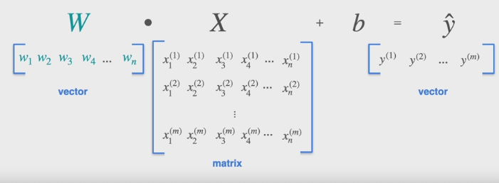

Linear Algebra for Machine Learning (Luis Serrano)
Table of Contents
1. Specialization introduction
3 courses:
- Linear algebra
- Calculus
- Probability and statistics
2. Course introduction
4 weeks:
- Systems of equations and matrix representation. Singularity, linear independence. Calculate determinant, row operations
- Solve 2x2 and 3x3 matrices
- Vectors in depth. How matrices transform one vector to another.
- Eigenvalues and eigenvectors
3. Week 1: what to expect and how to succeed
Prerequisites:
- Solving simple equation with 1 unknown variable
- Construct simple plots in coordinate system
4. Week 1: Programming experience
Course includes both graded programming assignments and ungraded programming labs.
Suggested:
- Data types (int, double, bool, string) and data structures (list, dict)
- If/else, loops, functions
- Importing libraries
- Reading, editing and debugging code
- Reading documentation
5. Week 1: Linear Algebra Applied I
Overview:
- The 2 representations of linear algebra (geometry and arrays)
- Singular vs non-singular systems
- Applications of linear algebra in machine learning
- Linear regression
5.1. Systems of linear equations
Example: predicting electrical output of wind turbine
- Input: wind speed
- Output: power generated
Plotting the power output against wind speed.
With linear regression, plot the output vs speed and find the line of best fit.
Traditionally: \(y=mx + b\), but in machine learning: \(y = wx+b\):
- the number multiplied by \(x\) is called the weight
- the intercept it called the bias
5.1.1. Including multiple variables
With a second variable e.g. temperature, makes the equation: \(y=w_1 x_1 + w_2 x_2 + b\). This can then be graphed in 3-dimensional space.
With multiple variables, just add new weight for each new feature, however, more difficult to graph. However the other math works the same.
\(y\) is called the target.
5.1.2. Real data
With real data, observations are numbered and inserted in parenthesis in the equation, e.g.:
\[ w_1 x_1^{(1)} + w_2 x_2^{(1)} + ... + w_n x_n^{(1)} + b = y^{(1)} \]
Solve all equations at same time, or as close as possible.
6. Week 1: Linear Algebra Applied II
Weights and biases are the same across all observations for:
\[ w_1 x_1^{(1)} + w_2 x_2^{(1)} + ... + w_n x_n^{(1)} + b = y^{(1)} \\ w_1 x_1^{(2)} + w_2 x_2^{(2)} + ... + w_n x_n^{(2)} + b = y^{(2)} \\ ... \\ w_1 x_1^{(n)} + w_2 x_2^{(n)} + ... + w_n x_n^{(n)} + b = y^{(n)} \\ \]
Instead of the above representation, this is equivalent for a vector/matrix: 